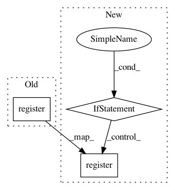

6f325b9135a729a403840866fcb5248d71f54645,service/server.py,BertServer,run,#BertServer#,47
Before Change
request = self.backend.recv_multipart()
worker, _, client = request[:3]
if client == b"READY":
poller.register(self.frontend, zmq.POLLIN)
logger.info("registered!")
continue
// parsing data size
After Change
request = self.backend.recv_multipart()
worker, _, client = request[:3]
free_a_worker(worker)
if client != b"READY" and len(request) > 3:
_, reply = request[3:]
X = np.frombuffer(memoryview(reply), dtype=md["dtype"])
finish_jobs[client].append(X.reshape(md["shape"]))
else:
poller.register(self.frontend, zmq.POLLIN)
if self.frontend in sockets:
// Get next client request, route to last-used worker
client, _, request = self.frontend.recv_multipart()
seqs = pickle.loads(request)
In pattern: SUPERPATTERN
Frequency: 3
Non-data size: 3
Instances
Project Name: hanxiao/bert-as-service
Commit Name: 6f325b9135a729a403840866fcb5248d71f54645
Time: 2018-11-13
Author: hanhxiao@tencent.com
File Name: service/server.py
Class Name: BertServer
Method Name: run
Project Name: hanxiao/bert-as-service
Commit Name: 7377851c8303ece6773d6b68745580f8e4e8b907
Time: 2018-11-13
Author: hanhxiao@tencent.com
File Name: service/server.py
Class Name: BertServer
Method Name: run
Project Name: hanxiao/bert-as-service
Commit Name: 815601e47f97acb3d00633d5ff172403c76bf034
Time: 2018-11-13
Author: hanhxiao@tencent.com
File Name: service/server.py
Class Name: BertServer
Method Name: run